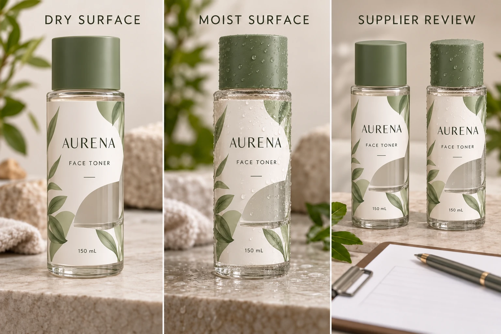

Observe the bottle at the point of application
Identify the container and its surface, the preceding process and the moment when moisture appears. Ask the operator whether the observation is occasional, limited to identified stock or repeatedly recorded under particular conditions. If frequency is unknown, say so rather than declaring a persistent production problem.
Distinguish condensation from filling residue, wash water or another liquid. The preparation question can change with the material present. A photograph may locate visible moisture but cannot identify every residue or establish the earlier temperature history.
Keep relevant measurements and operator observations as supplied. A comfortable room does not establish the condition of bottles moved from another environment. The application-temperature guide explains why the surface and the stage need their own record.
Read the construction claim in context
Avery's label-application guidance identifies moisture as a barrier at the adhesive-to-surface interface and recommends appropriate surface preparation for its products. Its instructions are not a universal procedure for every coated cosmetic bottle or custom adhesive.
Ask the actual label supplier whether its proposal addresses the observed application condition. Request the relevant construction reference and the scope of its supporting information. A service-water-resistance statement, an immersion example and a wet-application recommendation are different claims.
The waterproof-material guide covers the wider construction discussion. Here the unresolved decision occurs before a bond has been established. A later-use sample should not be treated as evidence for that earlier event unless the evaluation actually represented it.
Compare two supported routes
First ask the site whether it can present bottles under the supplier's required application conditions. Any drying, conditioning or process adjustment must be authorised and compatible with the container and production operation. This guide does not prescribe heating, compressed-air settings or an arbitrary waiting period.
If that route cannot be followed, ask the supplier to assess whether another construction or arrangement can address the actual surface condition. Identify the required sample and operating review. Do not assume that a stronger adhesive name is sufficient or that any alternative is currently available from YT Labels.
Keep both routes explicit in the comparison. A process adjustment may affect scheduling or handling. A different construction may affect appearance, printing or receiving requirements. Obtain the actual implications from the parties involved rather than inventing a cost advantage for either option.
Use a moisture-at-application record
This editorial worksheet helps the operator and supplier discuss the same condition. It is not a wet-adhesion test method.
| Field | Record | Decision supported |
|---|---|---|
| Container | Material, coating and supplier reference | Which surface receives the label? |
| Moisture observation | Location, stage and known liquid source | What condition needs addressing? |
| Process history | Recorded preceding stages and unknowns | Which assumptions need clarification? |
| Current construction | Reference and actual application instructions | Does the proposal cover the condition? |
| Process option | Site-authorised preparation route | Can required conditions be achieved? |
| Material option | Supplier-supported candidate and evidence scope | What alternative needs evaluation? |
| Release | Accepted combination, owner and limitations | What may proceed? |
Begin with container and observation identity. Obtain the current construction's instructions, then have the site and supplier assess the feasible options. Arrange an identified representative evaluation where needed and record which condition was actually used. Tie the decision to that combination.
Keep release pending if a dry-bottle sample is the only evidence for a proposed wet-bottle operation, or if the preparation route cannot be reproduced at the site. A good-looking photograph does not close that mismatch.

Separate occasional observations from a planned operating condition
A hypothetical site may find moisture on a small identified group of containers following an unusual transfer. Its useful response can be a focused hold and an authorised preparation review, without assuming the entire label specification must change.
Another operation may routinely present containers under a documented condition that the current proposal does not address. It needs a supported process or construction decision before the full order is released. Repeating a successful dry sample would not answer that question.
For cosmetic bottle labels, provide container details, artwork, dimensions, quantities and the actual application-stage observation. Include the current construction and any site restrictions. The inquiry form prepares a message; send records by email or WhatsApp. Ask which route addresses the surface that will really reach the labeling station.